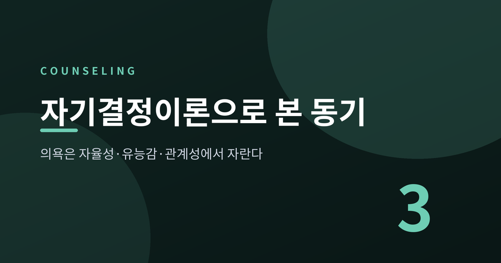
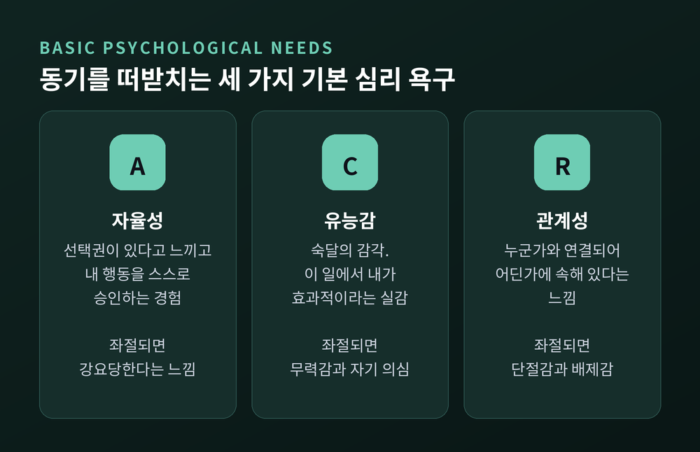
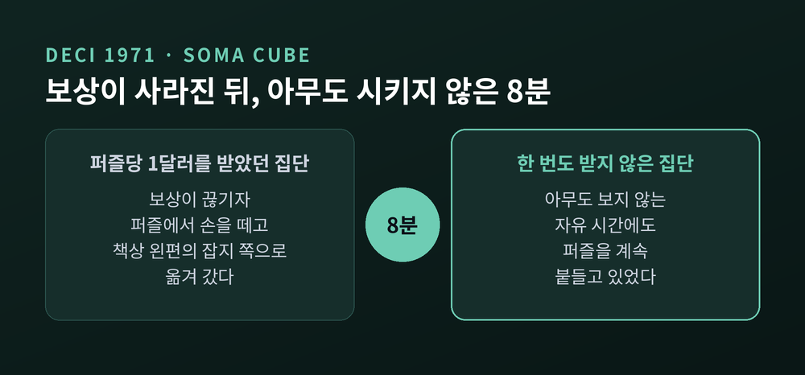
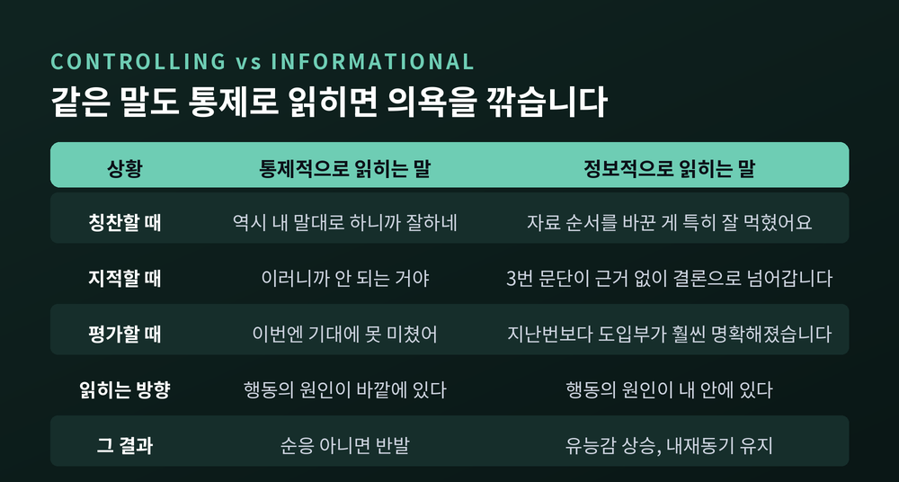
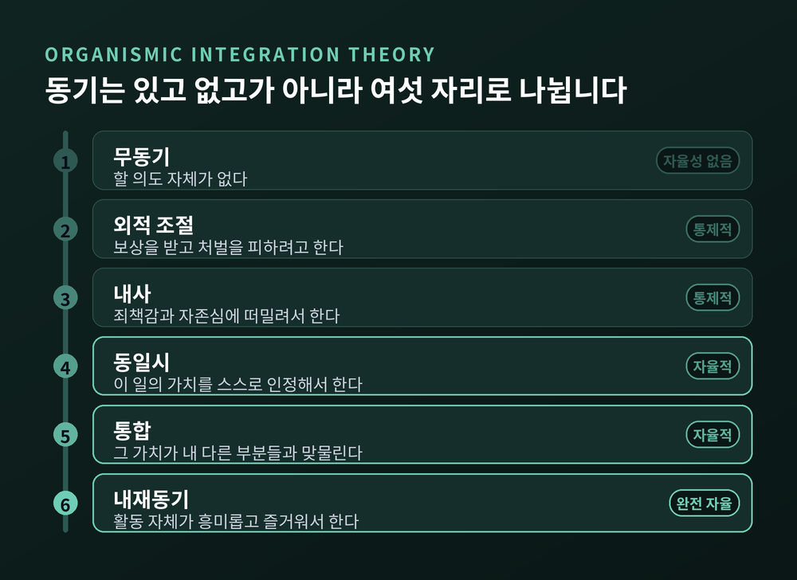
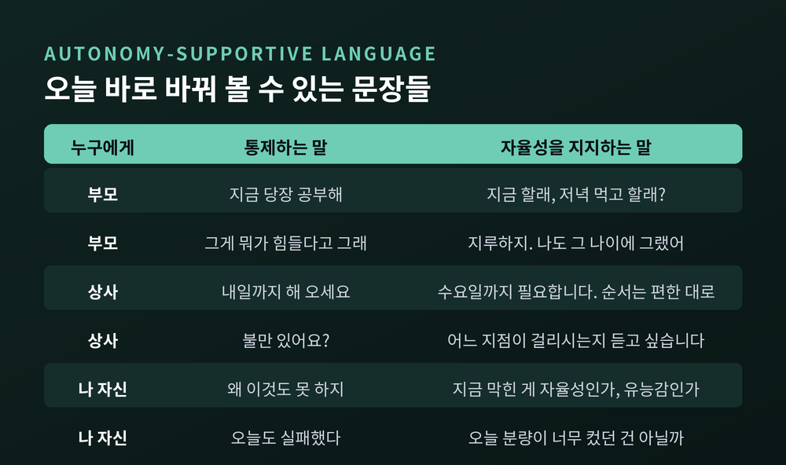

이번 글에서는 자기결정이론을 정리해 보겠습니다. 하기 싫은 마음을 의지력 부족으로 설명하는 대신, 무엇이 막혀 있는지를 들여다보는 관점입니다. 1971년의 작은 퍼즐 실험에서 출발해 오늘 우리가 쓸 수 있는 문장까지 차례로 짚어 보겠습니다.
책상 앞에 앉았는데 손이 움직이지 않습니다. 해야 할 일은 분명한데 몸이 따르지 않습니다.
이럴 때 우리는 대개 자신을 탓합니다. 게으르다고, 독하지 못하다고 말합니다.
자기결정이론은 그 지점에서 질문을 바꿉니다. 동기가 있느냐 없느냐가 아니라, 어떤 종류의 동기인가를 묻습니다.
로체스터 대학 의료센터의 정리에 따르면, 초기 심리학은 동기를 단순하게 보았습니다. 있거나 없거나 둘 중 하나였습니다. 그러나 40년이 넘는 연구는 다른 그림을 그려 냈습니다. 중요한 것은 동기의 양이 아니라 질입니다. 스스로 원해서 움직이는가, 아니면 밀려서 움직이는가.
리처드 라이언과 에드워드 데시는 2000년 『아메리칸 사이콜로지스트』에 발표한 논문에서 이렇게 씁니다. 인간은 능동적이고 몰입할 수도 있고, 수동적이고 소외될 수도 있는데, 그 차이는 상당 부분 그가 놓인 사회적 조건에서 온다고요.
그러니 무기력은 성격의 문제이기 전에 환경의 문제일 수 있습니다.
자기결정이론은 사람에게 세 가지 선천적 심리 욕구가 있다고 봅니다. 이 셋이 채워지면 자기동기와 정신건강이 올라가고, 막히면 동기와 안녕감이 함께 내려갑니다.
자율성은 선택권이 있다고 느끼고 자기 행동을 기꺼이 승인하는 경험입니다. 반대편에는 강요당하고 통제당한다는 느낌이 있습니다.
유능감은 숙달의 감각입니다. 내가 이 일에서 효과적이라는 실감입니다.
관계성은 누군가와 연결되어 있고 어딘가에 속해 있다는 느낌입니다.
이것들은 취향이 아니라 욕구입니다. 음식이나 잠처럼, 없으면 실제로 손상이 생깁니다.

한 가지 더 알아 둘 것이 있습니다. 최근 연구는 욕구의 '결핍'과 '좌절'을 나눕니다. 결핍이 그저 채워지지 않은 상태라면, 좌절은 욕구가 능동적으로 위협받는 상태입니다. 둘은 같은 축의 양 끝이 아니라 독립된 두 차원으로 봅니다.
그리고 방향이 다릅니다. 욕구 만족은 주로 안녕감과 연결되고, 욕구 좌절은 주로 부적응과 연결됩니다. 운동선수를 대상으로 한 연구에서 욕구 만족은 활력과 긍정 정서를 예측한 반면, 욕구 좌절은 번아웃과 우울, 신체 증상을 예측했습니다.
채워지지 않는 것보다 짓눌리는 것이 더 아프다는 뜻입니다.
추상적인 말은 여기까지 하고, 흔히 볼 수 있는 장면 셋을 가정해 보겠습니다. 특정 개인의 이야기가 아니라 상담 현장에서 자주 반복되는 형태를 일반화한 것입니다.
첫째, 공부가 손에 잡히지 않는 학생. 시간표는 부모가 짰고 과목도 학원도 정해져 있습니다. 성적이 오르면 용돈이 오르고 떨어지면 잔소리가 붙습니다. 공부의 이유를 물으면 "안 하면 혼나니까"라고 답합니다. 자율성이 거의 남아 있지 않은 구조입니다. 여기서 필요한 것은 더 강한 압박이 아니라, 무엇을 언제 어떻게 할지에 대한 아주 작은 결정권입니다.
둘째, 번아웃 직전의 직장인. 일은 잘합니다. 다만 왜 하는지 모른 채 합니다. 지시는 내려오고 이유는 설명되지 않습니다. 성과는 숫자로만 돌아옵니다. 직장을 다룬 자기결정이론 연구에서 번아웃과 이직, 결근, 직무 스트레스가 늘 함께 등장하는 이유가 여기 있습니다. 이 사람에게 부족한 것은 체력이 아니라 이유입니다.
셋째, 운동 계획이 무너지는 사람. 1월에 등록하고 2월에 발길을 끊습니다. 목표는 대개 체중이나 남의 시선입니다. 처음 며칠은 의욕이 넘치지만, 그 의욕은 '해야 한다'는 압박에서 나온 것이라 오래가지 못합니다. 게다가 자세도 서툴고 숨도 차니 유능감마저 깎입니다. 자율성과 유능감이 동시에 흔들리면 계획은 무너지기 쉽습니다.
세 장면 모두 의지의 문제로 보이지만, 안을 들여다보면 막혀 있는 욕구가 먼저 보입니다.
자기결정이론의 출발점은 작은 실험 하나였습니다.
1971년 에드워드 데시는 대학생 24명에게 소마 큐브라는 입체 퍼즐을 냈습니다. 그 자체로 꽤 재미있는 과제입니다. 책상 오른쪽에는 만들어야 할 도형 그림이, 왼쪽에는 최신 잡지들이 놓여 있었습니다.
첫 회기에는 두 집단 모두 보상 없이 퍼즐을 풀었습니다. 두 번째 회기에서 한 집단만 퍼즐 하나를 풀 때마다 1달러를 받았습니다. 세 번째 회기에서는 두 집단 모두 아무것도 받지 않았습니다.
진짜 측정은 다른 곳에 있었습니다. 실험자가 구실을 대고 방을 8분간 비웁니다. 이 시간에 참가자는 퍼즐을 계속 만져도 되고 잡지를 읽어도 됩니다. 아무도 시키지 않는 그 8분에 무엇을 하는가, 그것이 내재동기의 지표였습니다.
결과는 뜻밖이었습니다. 돈을 받았던 쪽이 보상이 사라지자 퍼즐에서 손을 떼고 잡지 쪽으로 옮겨 갔습니다. 돈을 받지 않은 쪽은 계속 퍼즐을 붙들었습니다.

같은 시기 스탠퍼드 대학 부속 유아원에서도 비슷한 일이 확인되었습니다. 일방경으로 관찰해 이미 색 사인펜 그림을 좋아하던 아이들 51명을 골라냈습니다. 그중 한 집단에게만 금색 도장과 붉은 리본이 달린 '잘한 어린이 상' 증서를 예고했습니다. 이후 자유 놀이 시간에 그 아이들이 그림에 쓴 시간은 절반 수준으로 줄었습니다.
여기서 놓치면 안 되는 조건이 있습니다. 두 실험 모두 원래 그 활동을 좋아하던 사람들이 대상이었다는 점입니다. 과잉정당화 효과는 흥미가 이미 있는 자리에서 일어납니다.
1977년 로체스터 대학에서 데시는 대학원생이던 리처드 라이언을 만납니다. 사고방식은 달랐지만 문제의식은 겹쳤습니다. 두 사람의 공동 작업은 1980년 인지평가이론으로, 1985년 저서 『내재동기와 인간 행동의 자기결정』으로 이어졌습니다. '자기결정'이라는 말이 처음 세상에 나온 자리가 이 책입니다.
1999년 데시와 리처드 코에스트너, 라이언은 128편의 실험을 모아 메타분석을 발표했습니다. 『사이콜로지컬 불러틴』에 실린 이 논문이 지금도 이 주제의 기준점입니다.
수치는 이렇습니다. 자유선택 상황에서 측정한 내재동기를 기준으로, 참여에 걸린 보상은 d = −0.40, 완료에 걸린 보상은 d = −0.36, 수행 수준에 걸린 보상은 d = −0.28만큼 내재동기를 깎았습니다. 저해 효과는 미리 예고된 보상에서 가장 컸습니다.
반대 방향의 숫자도 있습니다. 긍정적 피드백은 자유선택 행동을 d = +0.33, 자기보고 흥미를 d = +0.31만큼 높였습니다.
같은 '보상'인데 왜 방향이 갈릴까요.
인지평가이론의 답은 명료합니다. 모든 외적 사건은 두 얼굴을 갖습니다. 하나는 통제적 측면이고 다른 하나는 정보적 측면입니다. 어느 쪽이 더 크게 읽히느냐가 그 사건의 의미를 결정합니다.
정보적으로 읽히면 행동의 원인이 내 안에 있다고 느끼게 되고 유능감이 올라갑니다. 통제적으로 읽히면 원인이 바깥으로 옮겨 갑니다. 그때 사람은 순응하거나 반발합니다. 어느 쪽이든 스스로 원해서 하는 상태는 아닙니다.

그래서 칭찬도 종류가 있습니다. "역시 내 말대로 하니까 잘하네"는 칭찬의 외피를 쓴 통제입니다. "이번 발표는 자료 순서를 바꾼 게 특히 잘 먹혔어요"는 정보입니다. 앞의 말은 상대를 내 기준에 맞춘 것에 대해 상을 주고, 뒤의 말은 무엇이 효과적이었는지를 알려 줍니다.
이 대목에서 균형을 잡아야겠습니다.
로버트 아이젠버거와 주디 캐머런은 1996년 『아메리칸 사이콜로지스트』에 정면으로 반대되는 글을 실었습니다. 제목이 "보상의 해로운 효과 — 실재인가 신화인가"입니다. 이들은 자체 메타분석을 근거로 보상의 부정적 효과가 제한적이며 쉽게 피할 수 있다고 보았습니다.
설명 방식도 달랐습니다. 수행의 질과 무관하게 보상이 주어지면 사람들은 보상을 통제할 수 없다는 것을 학습해 무기력해지는데, 많은 연구자가 이 학습된 무기력을 내재동기 감소로 오독했다는 것입니다.
논쟁은 여러 해 오갔습니다. 1999년과 2001년에 양측이 각각 논평과 재반박을 주고받았습니다. 데시 쪽은 상대의 메타분석에 심각한 방법론적 결함이 있다고 했고, 캐머런 쪽은 부정적 효과가 '제한된 현상'이라고 맞섰습니다.
어느 한쪽이 완결적으로 이겼다고 말하기는 어렵습니다. 다만 양측이 대체로 동의하는 지점은 있습니다. 애초에 흥미가 없던 지루한 과제에 보상을 붙이는 것은 별문제가 되지 않는다는 것입니다.
정리하면, 문제는 보상 자체가 아니라 이미 좋아하던 일에 통제의 냄새를 입히는 것입니다.
자기결정이론이 특히 실용적인 대목은 동기를 흑백으로 나누지 않는다는 점입니다.
유기체통합이론은 동기를 자율성의 정도에 따라 여섯 자리로 늘어놓습니다.
무동기에서 시작합니다. 할 의도 자체가 없는 상태입니다. 그다음이 외적 조절입니다. 보상과 처벌 때문에 움직입니다. 세 번째가 내사입니다. 죄책감이나 불안, 혹은 자존심 때문에 스스로를 몰아붙입니다. 겉으로는 자발적으로 보이지만 안에서는 여전히 밀려서 하는 상태입니다.
네 번째부터 결이 바뀝니다. 동일시는 그 행동의 가치를 스스로 인정하는 단계입니다. 다섯 번째 통합은 그 가치가 내 다른 부분들과 어긋나지 않고 맞물리는 단계입니다. 마지막이 내재동기입니다. 활동 자체가 재미있어서 합니다.

여기서 중요한 사실이 있습니다. 두 번째부터 다섯 번째까지는 모두 외재적 동기입니다. 그런데 동일시와 통합은 외재적이면서도 자율적입니다. 즉 외재적 동기라고 다 같지 않습니다.
그리고 더 자율적인 쪽으로 내면화될수록 수행과 지속성, 행동의 질, 심리적 안녕감이 함께 좋아집니다.
내면화는 저절로 일어나지 않습니다. 세 욕구가 받쳐 줄 때 진행됩니다. 왜 필요한지 납득할 이유가 주어질 때, 어떻게 할지에 대한 선택지가 남아 있을 때, 그 가치를 전해 주는 사람과 연결감이 있을 때, 그리고 할 수 있다는 감각이 있을 때 말입니다.
이론을 문장으로 옮겨야 쓸모가 생깁니다.
교육심리학자 존 리브는 자율성 지지적 태도를 여섯 가지 행동으로 정리했습니다. 상대의 관점을 취하기, 내적 동기 자원을 살리기, 설명적 이유를 제공하기, 부정적 감정을 인정하고 받아들이기, 정보적이고 압박하지 않는 언어를 쓰기, 그리고 인내심을 갖기입니다.
교사 훈련에서는 이것을 '치환'의 형태로 가르칩니다. 지시와 명령을 내리는 자리에 설명적 이유를 놓고, 외적 인센티브를 제시하는 자리에 개인의 관심사로 초대하는 말을 놓고, 부정적 감정에 반박하려는 자리에 그 감정을 인정하는 말을 놓습니다.

부모라면 이렇게 바꿔 볼 수 있습니다.
"지금 당장 공부해." 대신 "지금 할래, 저녁 먹고 할래?"
"그게 뭐가 힘들다고 그래." 대신 "지루하지. 나도 그 나이에 그랬어."
"이건 그냥 해야 하는 거야." 대신 "이 단원을 넘겨야 다음 게 이해되거든."
상사라면 이렇게 바꿔 볼 수 있습니다.
"내일까지 해 오세요." 대신 "목요일 회의에 쓸 자료라 수요일까지 필요합니다. 순서는 편한 대로 잡으셔도 됩니다."
"수고했어요." 대신 "지난번 표를 앞으로 뺀 게 이해를 크게 도왔습니다."
"불만 있어요?" 대신 "이 방식이 불편할 수 있겠다고 생각했습니다. 어느 지점이 걸리시나요?"
그리고 자기 자신에게는 이렇게 물어볼 수 있습니다.
"왜 이것도 못 하지." 대신 "지금 막혀 있는 게 자율성인가, 유능감인가, 관계성인가."
"오늘도 실패했다." 대신 "오늘 분량이 너무 컸던 건 아닐까."
말투 하나로 사람이 달라지지는 않습니다. 다만 같은 요구도 통제로 전달되면 내사에서 멈추고, 이유와 함께 전달되면 동일시로 넘어갈 여지가 생깁니다.
자기결정이론은 목표를 볼 때 두 가지를 나눠 봅니다. 목표의 내용과 목표의 이유입니다.
내용 쪽에서는 내재적 열망과 외재적 열망을 구분합니다. 내재적 열망은 의미 있는 관계, 개인적 성장, 공동체에 대한 기여입니다. 외재적 열망은 부와 명성과 이미지입니다.
연구 결과는 다소 서늘합니다. 내재적 열망의 달성은 안녕감과 정적으로 연결되었지만, 외재적 열망의 달성은 그렇지 않았습니다. 외재적 성과를 상대적으로 더 중시할수록 정신건강 지표와는 오히려 부적 관련을 보였습니다.
이유 쪽도 함께 보아야 합니다. 같은 '운동하기'라도 몸이 가벼워지는 감각이 좋아서 하는 것과, 남들 보기에 부끄럽지 않으려고 하는 것은 다른 목표입니다.
건강 영역의 메타분석 하나가 이 대목을 뒷받침합니다. 184개 데이터셋을 모은 이 연구에서, 자율성을 지지받는다는 지각은 자율성(β = .41), 유능감(β = .33), 관계성(β = .47) 만족을 모두 예측했습니다. 그리고 자율적으로 동기화된 사람의 행동 변화가 더 효과적이고 더 오래갔습니다.
흥미로운 세부가 하나 있습니다. 이 연구에서 자율적 동기를 예측하는 힘은 유능감(β = .35)이 자율성(β = .13)이나 관계성(β = .15)보다 뚜렷하게 컸습니다. 건강 행동처럼 '할 수 있는가'가 관건인 영역에서는 유능감이 특히 무겁게 작동한다는 뜻으로 읽힙니다.
그러니 목표를 세울 때 난도를 조절하는 일은 사소한 문제가 아닙니다. 충분히 도전적이되 압도적이지 않은 지점, 그 자리가 유능감이 자라는 자리입니다.
한계도 적어 두겠습니다.
첫째, 위 수치들은 특정 표본과 특정 영역에서 나온 값입니다. 한국인 자료로 그대로 옮겨 읽기는 어렵습니다.
둘째, 세 욕구의 상대적 비중은 영역마다 달라 보입니다. 자기결정이론은 셋을 위계 없이 모두 필수로 보지만, 실제 연구에서는 어느 하나가 더 크게 잡히는 경우가 자주 나옵니다.
셋째, 보상 논쟁은 여전히 열려 있습니다. 앞서 본 대로 반대편 메타분석이 존재하고, 양측의 논평이 여러 차례 오갔습니다.
넷째, 환경을 바꾸는 일이 늘 개인의 손에 있지는 않습니다. 시간표를 바꿀 수 없는 학생과 지시를 거절할 수 없는 직원에게 "자율성을 회복하라"고 말하는 것은 공허합니다. 이론은 방향을 알려 줄 뿐, 여건까지 마련해 주지는 못합니다.
예전에는 의욕이 나지 않을 때 자신을 더 세게 몰아붙였습니다. 지금은 먼저 무엇이 막혔는지부터 봅니다. 그 변화만으로도 헛된 자책이 꽤 줄었습니다.
끝으로 한 마디만 더 드리겠습니다.
자기결정이론이 말하는 바는 단순합니다. 사람은 원래 움직이려 하는 존재이고, 그 움직임은 자율성과 유능감과 관계성이라는 세 개의 뿌리에서 자랍니다. 의욕이 나지 않는다면 뿌리 중 하나가 마른 것입니다.
"의욕은 짜내는 것이 아니라 자라는 것입니다."
한 가지는 꼭 덧붙여야겠습니다. 이 글은 일반적인 심리학 연구를 정리한 정보이며 진단이나 치료를 위한 조언이 아닙니다. 무기력과 우울감이 2주 이상 이어지거나 일상과 관계에 지장을 준다면, 정신건강의학과나 전문 상담기관의 도움을 받으시길 권합니다. 보건복지부는 자살예방 상담전화를 세 자리 번호 109로 통합해 운영하고 있고, 정신건강상담전화 1577-0199도 그대로 유지되고 있습니다. 상담 후 지속적인 도움이 필요하면 지역 정신건강복지센터나 자살예방센터, 청소년상담기관으로 연계해 줍니다.
혼자 버티는 것이 성실함이라고 오래 믿었습니다. 지금은 다르게 생각합니다. 도움을 청하는 일 역시 자기결정이 작동하는 방식 중 하나라고요.
의욕이 다시 생길 수 있겠냐고 물으신다면, 저는 그렇다고 답하겠습니다. 다만 그 시작은 더 강한 채찍이 아니라, 오늘 내가 스스로 정할 수 있는 아주 작은 한 가지일 것입니다.